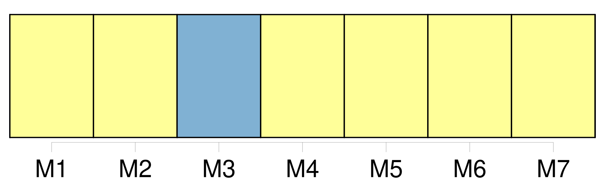

Longueur nb maillons : 9 mentions |
 |
Comme le lecteur doit être las de cette promenade à travers la solitude, la misère et l'abandon, menons -le à la seule pièce un peu vivante du château désert, à la cuisine, dont [la cheminée] envoyait au ciel ce léger nuage blanchâtre mentionné dans la description extérieure du castel. Un maigre feu léchait de ses langues jaunes la plaque de [la cheminée] , et de temps en temps atteignait le fond d'un coquemar de fonte pendu à la crémaillère, et sa faible réverbération allait piquer dans l'ombre une paillette rougeâtre au bord des deux ou trois casseroles attachées au mur. Le jour qui tombait par le large tuyau montant jusqu'au toit, sans faire de coude, s'assoupissait sur les cendres en teintes bleuâtres et faisait paraître le feu plus pâle, en sorte que dans [cet âtre froid] la flamme même semblait gelée. [9 phrases]
À l'apparition du nouveau venu, le chat noir, qui semblait lié de longue date avec lui, quitta les cendres de [l'âtre] et se vint frotter amicalement contre ses jambes, arquant le dos, ouvrant et refermant ses griffes, en faisant sortir de sa gorge ce murmure enroué qui est le plus haut signe de satisfaction chez la race féline. [1 phrases]
» [3 phrases]
Pierre s'assit sous le manteau de [la cheminée] , festonnée d'un vieux lambrequin de serge verte découpé à dents de loup et tout jauni par la fumée, sur un escabeau de bois, ayant Béelzébuth à côté de lui. [10 phrases] Le dos appuyé au pan intérieur de [la cheminée] , il avait croisé au-dessus de son genou ses grosses mains rougies de tons violacés comme des feuilles de vigne à la fin de l'automne, et faisait un pendant immobile au chat. [38 phrases] Un reste de feu, qu'avivait la rafale engouffrée dans [la cheminée] , colorait de reflets bizarres le groupe réuni autour de la table avec une sorte d'intimité triste qui faisait ressortir encore la mélancolique solitude du château. [2 phrases]
Pierre, se baissant [au foyer] , alluma un éclat de bois de pin enduit de résine, sorte de chandelle économique qu'emploient les pauvres paysans, et se mit à précéder le jeune seigneur ; Miraut et Béelzébuth se joignirent au cortège : la lueur fumeuse de la torche faisait vaciller sur les murailles de l'escalier les fresques pâlies et donnait une apparence de vie aux portraits enfumés de la salle à manger dont les yeux noirs et fixes semblaient lancer un regard de pitié douloureuse sur leur descendant. |

|
Il est possible de télécharger la ressource sur la page Ortolang |
Si vous avez des questions ou vous voyez des erreurs, merci d'envoyer un mail à silvia.federzoni89@gmail.com |